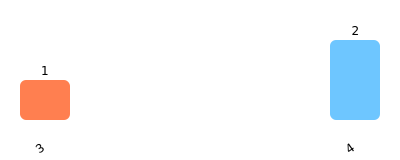
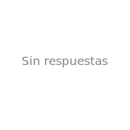

Protección real para la fragilidad de la infancia.
Cuando el sistema calla, la tecnología habla.
"71% de los niños en Chile sufre violencia de sus cuidadores."
Estudio nacional sobre violencia contra la infancia
¿Qué es Voz de Cristal?
Un testigo independiente que el niño no tiene que activar.
Creemos que los niños no deberían tener que pedir ayuda para ser protegidos. Muchas veces no pueden hacerlo: están en shock, tienen miedo, o simplemente no saben que lo que viven no es normal.
Por eso diseñamos un dispositivo que actúa como testigo independiente: detecta situaciones de riesgo y alerta en tiempo real, sin depender del niño ni del adulto presente.
Los 4 Pilares
Sin cámaras ni micrófonos
El dispositivo solo detecta patrones de riesgo. Nunca graba ni escucha. La privacidad es un derecho, no una concesión.
Cierra la brecha de evidencia
Cuando un niño habla, su palabra debe bastar. Pero cuando no puede hacerlo, necesita un testigo independiente que no pueda ser intimidado.
Llega donde otros no llegan
Funciona con tecnología NB-IoT, la misma que usan medidores de agua. No depende de Wi-Fi ni del teléfono de nadie.
Costo-eficiente como política pública
Diseñado con componentes estandarizados para que sea viable implementarlo en colegios y jardines infantiles sin comprometer presupuestos públicos.
¿Por qué ahora?
Porque reparar cuesta más que proteger.
Hoy el Estado gasta millones reparando daños que pudieron detenerse a tiempo. Terapias de por vida, juicios largos, familias destrozadas.
Voz de Cristal no evita que el agresor actúe la primera vez, pero corta el ciclo antes de que se vuelva crónico.
Tu opinión en esta encuesta nos ayuda a demostrar ante municipios y fundaciones que esta necesidad existe. Que merece ser una política pública. Que un niño no debería esperar años para ser escuchado.
Validación Social
Tu voz valida esta protección.
Responde la encuesta anónima. Tu opinión sirve para demostrar la necesidad ante autoridades, fundaciones y socios estratégicos que puedan financiar el despliegue.
¿Qué tan seguro se siente respecto a la respuesta actual del sistema ante el maltrato infantil dentro del hogar?
 Escala 1 (nada seguro) a 5 (muy seguro)¿Solicitaría el dispositivo para su hijo/a?
¿Qué monto consideraría justo pagar por el dispositivo?
¿Qué factor es más importante para usted en una solución de este tipo?
* Los gráficos se actualizan automáticamente a medida que se reciben nuevas respuestas. No se muestra información personal ni individual.
Preguntas Frecuentes
¿Cómo protege si no graba ni escucha? +
Detecta patrones anómalos de movimiento y sonido mediante inteligencia artificial que vive dentro del dispositivo. Envía una alerta en tiempo real, sin subir audio ni video a ninguna nube.
¿Es realmente viable económicamente? +
Sí. Está diseñado con hardware de bajo costo y componentes estandarizados. La inversión es una fracción de lo que el Estado gasta en reparar el daño años después.
¿Por qué necesitan mi voz? +
Porque las instituciones nos piden evidencia de que la comunidad apoya esta solución. Tu respuesta anónima nos acerca a convertir esto en una política pública real.
¿Dónde puedo ver los detalles técnicos? +
Tenemos un dossier completo para instituciones y potenciales socios. Descargar dossier técnico →
Equipo
Yaneth Villegas
Vinculación Social
Responsable de la articulación con familias, organizaciones sociales y la traducción del sistema técnico al lenguaje comunitario.
Héctor Águila
Arquitectura de Sistemas
Responsable del diseño técnico, seguridad de datos, algoritmos de detección y automatización de respuestas.
Iniciativa ciudadana que busca colaboración institucional para escalar esta solución y proteger a la infancia vulnerable.